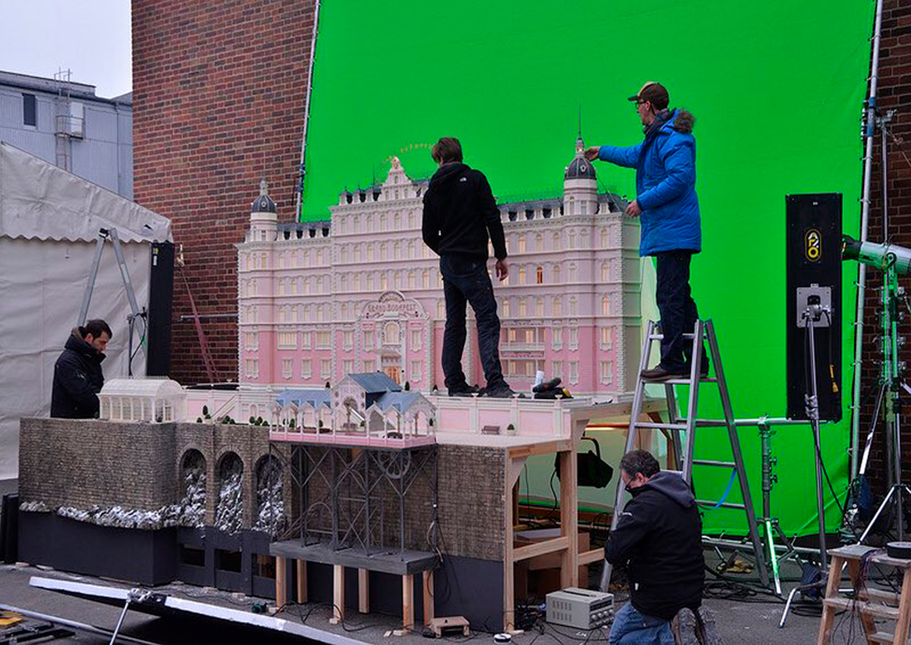

4. Los periódicos que aparecen en la película fueron escritos e impresos para la ocasión, desde la primera hasta la última página. El propio Wes se encargó de redactar todas las noticias que recoge el Trans-Alpine Yodel en su edición ficticia del 13 de octubre de 1932, desde la portada hasta las páginas interiores y a diferencia de otras películas, cada vez que un artículo periodístico aparece tiene una descripción detallada y completa de los eventos en el titular.
5. En el reparto encontramos a cuatro actores ganadores de un Óscar: Adrien Brody, Tilda Swinton, Fisher Stevens y F. Murray Abraham.